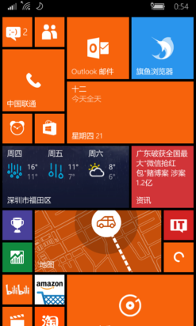

概览
Windows 10 Mobile是Windows 10操作系统的分支版本，专为屏幕尺寸低于8英寸的智能手机和平板电脑设计。它使用ARM架构和IA-32处理器架构。该版本为移动设备提供了强大的功能，包括：同步处理功能、通用应用程序（Universal Apps）、从Android和iOS平台移植的应用，以及将设备连接至外部显示屏、并可使用类似PC的鼠标和键盘输入。
微软曾在Twitter上承诺所有Lumia Windows Phone 8智能手机都可以升级到Windows 10 Mobile，但部分功能的实现取决于硬件设备的兼容性。微软官方曾表示会为所有运行Windows Phone 8操作系统的设备提供Windows 10 Mobile更新。Windows 10移动版原定于2015年12月发布，但多次延期。直到2016年3月18日，微软才向18款机型推广了正式版，并表示除诺基亚Lumia 929外，目前没有向其他Windows Phone设备提供升级的计划。
2017年10月8日，微软操作系统部门副总裁Joe Belfiore表示，Windows 10 Mobile已经停止开发新版本和新功能，只会对现有版本和设备进行安全补丁和维护，支持期限已从先前公布的2019年12月延长到2020年1月。截至2020年12月，其市场占有率仅为0.02%。
发展历史
2014年，在Build 2014活动中，微软初次提出了“通用应用”的概念。在Windows 8.1创建的应用，可以移植到Windows Phone 8.1和Xbox One，用户数据和许可证、应用也可以在多个平台之间共享。
2014年7月，微软新任首席执行官萨提亚·纳德拉表示，公司计划将三个版本的Windows操作系统精简为一个单一的聚合操作系统，统一Windows、Windows Phone、Windows嵌入式系统在一个共同的架构和统一的应用生态系统中。然而，纳德拉表示，这些内部变化不会影响任何操作系统的功能。
2014年9月30日，微软推出了Windows 10，Terry Myerson表示，Windows 10将是微软的“最统一的平台”，并计划为台式电脑，笔记本，平板电脑，智能手机，一体机，物联网，混合现实头盔等设备提供一个“统一”的平台。2015年1月21日，Windows 10 Mobile预览版公开发布。与之前的Windows Phone版本相比，Windows 10还将扩大平台的统一，支持基于ARM的平板电脑，从而接替微软已经宣告失败的Windows RT平台。而Windows RT设备将收到一个与Windows 10个人电脑的一些特性不同的更新。
2015年，在Build 2015主题演讲中，微软宣布Windows Bridge，一些工具将允许Android和iOS的应用移植到Windows 10 Mobile，并由Windows Bridge for Android，一个运行环境（代号为“Astoria”）提供支持，允许重用Java或C++使Android应用移植到Windows 10。但包含了一些限制：Google移动服务API和某些核心API将不可用。
2017年，微软发布Windows 10 Mobile创意者更新，支持13款机型。之后，新的Mobile快速预览版本进入“feature2”分支，以修复Bug为主，几乎不提供任何新特性，不再和PC端的Redstone 3分支同步。微软表示这是“在整合OneCore代码”的结果。
2017年，微软向PC和Mobile端推送了错误的预览版本16212，这个版本意外泄露了Windows 10 Mobile的新特性，包括全新的自适应界面（CSHELL，Composable Shell），窗口化Continuum模式等。
2017年，微软作业系统部门副总裁Joe Belfiore表示，由于Windows 10 Mobile用户过少，缺乏App开发人员，Windows 10 Mobile已经停止开发新版本与新功能，只会对现有版本和设备进行安全补丁和维护。2020年1月14日，该系统正式停止更新。
